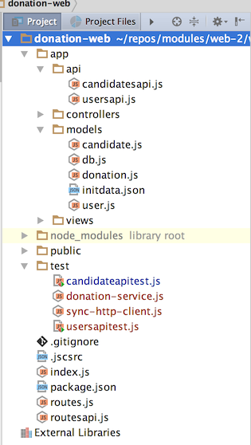
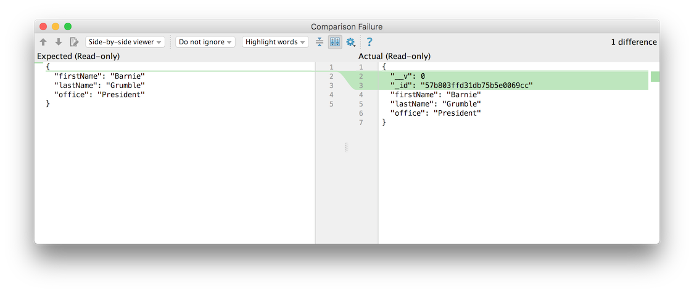
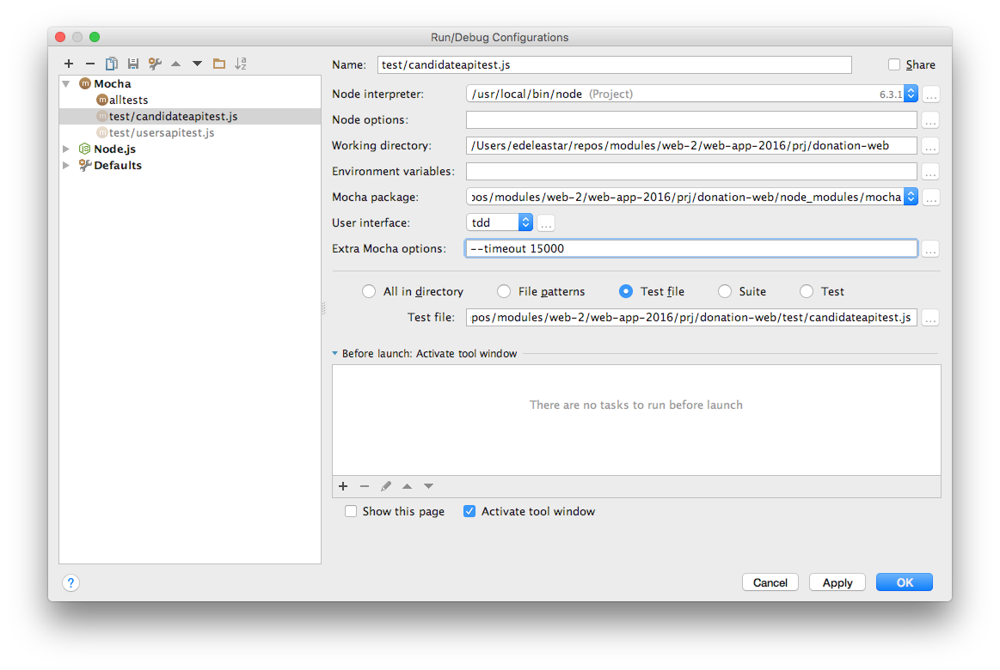

Expand the rudimentary test from the last lab into a more comprehensive suit of tests, exercising the api in depth.
Using this lab as a guide, develop a set of endpoints for the users collection, including:
Also implement tests to verify the endpoints work as expected.
const CandidatesApi = require('./app/api/candidatesapi');
const UsersApi = require('./app/api/usersapi');
module.exports = [
{ method: 'GET', path: '/api/candidates', config: CandidatesApi.find },
{ method: 'GET', path: '/api/candidates/{id}', config: CandidatesApi.findOne },
{ method: 'POST', path: '/api/candidates', config: CandidatesApi.create },
{ method: 'DELETE', path: '/api/candidates/{id}', config: CandidatesApi.deleteOne },
{ method: 'DELETE', path: '/api/candidates', config: CandidatesApi.deleteAll },
{ method: 'GET', path: '/api/users', config: UsersApi.find },
{ method: 'GET', path: '/api/users/{id}', config: UsersApi.findOne },
{ method: 'POST', path: '/api/users', config: UsersApi.create },
{ method: 'DELETE', path: '/api/users/{id}', config: UsersApi.deleteOne },
{ method: 'DELETE', path: '/api/users', config: UsersApi.deleteAll },
];'use strict';
const User = require('../models/user');
const Boom = require('boom');
exports.find = {
auth: false,
handler: function (request, reply) {
User.find({}).exec().then(users => {
reply(users);
}).catch(err => {
reply(Boom.badImplementation('error accessing db'));
});
},
};
exports.findOne = {
auth: false,
handler: function (request, reply) {
User.findOne({ _id: request.params.id }).then(user => {
reply(user);
}).catch(err => {
reply(Boom.notFound('id not found'));
});
},
};
exports.create = {
auth: false,
handler: function (request, reply) {
const user = new User(request.payload);
user.save().then(newUser => {
reply(newUser).code(201);
}).catch(err => {
reply(Boom.badImplementation('error creating User'));
});
},
};
exports.deleteAll = {
auth: false,
handler: function (request, reply) {
User.remove({}).then(err => {
reply().code(204);
}).catch(err => {
reply(Boom.badImplementation('error removing Users'));
});
},
};
exports.deleteOne = {
auth: false,
handler: function (request, reply) {
User.remove({ _id: request.params.id }).then(user => {
reply(User).code(204);
}).catch(err => {
reply(Boom.notFound('id not found'));
});
},
};The tests we have written so far are somewhat verbose and repetitive. For tests to be effective, they must remain concise and easy to maintain and evolve.
To facilitate this, we attempt to encapsulate both the http requests and the donation service access into a set of classes. These classes should simplify our tests and enable us to more easily devise more tests as the API evolves.
This class will encapsulate all lower level http request composition and transmission.
var request = require('sync-request');
class SyncHttpService {
constructor(baseUrl) {
this.baseUrl = baseUrl;
}
get(url) {
var returnedObj = null;
var res = request('GET', this.baseUrl + url);
if (res.statusCode < 300) {
returnedObj = JSON.parse(res.getBody('utf8'));
}
return returnedObj;
}
post(url, obj) {
var returnedObj = null;
var res = request('POST', this.baseUrl + url, { json: obj });
if (res.statusCode < 300) {
returnedObj = JSON.parse(res.getBody('utf8'));
}
return returnedObj;
}
}
module.exports = SyncHttpService;The class assumes we are always dealing with JSON payloads.
This is the first example of an ES6 Class in our labs so far. We will be making more use of these modern features in forthcoming labs.
This class encapsulates the client side of the donation api. It is layered on top of the SyncHttpClient class, and delivers a simplified interface to the unit tests.
'use strict';
const SyncHttpService = require('./sync-http-service');
const baseUrl = 'http://localhost:4000';
class DonationService {
constructor(baseUrl) {
this.httpService = new SyncHttpService(baseUrl);
}
getCandidates() {
return this.httpService.get('/api/candidates');
}
getCandidate(id) {
return this.httpService.get('/api/candidates/' + id);
}
createCandidate(newCandidate) {
return this.httpService.post('/api/candidates', newCandidate);
}
getUsers() {
return this.httpService.get('/api/users');
}
getUser(id) {
return this.httpService.get('/api/users/' + id);
}
createUser(newUser) {
return this.httpService.post('/api/users', newUser);
}
}
module.exports = DonationService;Place both of the classes in the test folder. Your project should look like this now:

With these utility classes in place, we can proceed to a simpler, more robust unit tests.
We start by factoring out our test data into a separate JSON file:
{
"candidates": [
{
"firstName": "Lisa",
"lastName": "Simpson",
"office": "President"
},
{
"firstName": "Donald",
"lastName": "Simpson",
"office": "President"
}
],
"newCandidate":
{
"firstName": "Barnie",
"lastName": "Grumble",
"office": "President"
}
}Keeping our test data - termed fixtures - in a separate file will keep the tests themselves more concise.
Replace the current candidatesapitest.js with the following version:
'use strict';
const assert = require('chai').assert;
const DonationService = require('./donation-service');
const fixtures = require('./fixtures.json');
suite('Candidate API tests', function () {
let candidates = fixtures.candidates;
let newCandidate = fixtures.newCandidate;
const donationService = new DonationService('http://localhost:4000');
test('create a candidate', function () {
const returnedCandidate = donationService.createCandidate(newCandidate);
assert.equal(returnedCandidate.firstName, newCandidate.firstName);
assert.equal(returnedCandidate.lastName, newCandidate.lastName);
assert.equal(returnedCandidate.office, newCandidate.office);
assert.isDefined(returnedCandidate._id);
});
});Run this test now - it should pass.
Looking at the test again:
test('create a candidate', function () {
const returnedCandidate = donationService.createCandidate(newCandidate);
assert.equal(returnedCandidate.firstName, newCandidate.firstName);
assert.equal(returnedCandidate.lastName, newCandidate.lastName);
assert.equal(returnedCandidate.office, newCandidate.office);
assert.isDefined(returnedCandidate._id);
});..perhaps we can simplify further, deploying the assert,equal method:
test('create a candidate', function () {
const returnedCandidate = donationService.createCandidate(newCandidate);
assert.equal(returnedCandidate, newCandidate);
assert.isDefined(returnedCandidate._id);
});This looks reasonable, however when we run it the test if fails. The test runner in WebStorm can show us why:

The returned object contains the fields as expected, but also additional, legitimate, fields that cause the equals test to fail. We need a comparison that will test to see if the returnedCandidate is a superset of the newCandidate object. Some solutions are discussed here:
The simplest involves including the lodash library
This provides many useful utilities functions, including :
First we install lodash:
npm install lodash -saveRequire is at the top of our test:
const _ = require('lodash');And now we can try this version of the test:
test('create a candidate', function () {
const returnedCandidate = donationService.createCandidate(newCandidate);
assert(_.some([returnedCandidate], newCandidate), 'returnedCandidate must be a superset of newCandidate');
assert.isDefined(returnedCandidate._id);
});This should pass now.
With fixtures and an simplified comparison capability mow in place, we can proceed to evolve a more comprehensive set of tests.
First we need to provide support for the delete operations in our encapsulated layers:
delete (url) {
var res = request('DELETE', this.baseUrl + url);
return res.statusCode;
} deleteAllCandidates() {
return this.httpService.delete('/api/candidates');
}
deleteOneCandidate(id) {
return this.httpService.delete('/api/candidates/' + id);
}Now we write a new test to verify delete:
test('delete a candidate', function () {
const c = donationService.createCandidate(newCandidate);
assert(donationService.getCandidate(c._id) != null);
donationService.deleteOneCandidate(c._id);
assert(donationService.getCandidate(c._id) == null);
});This seems like an easy test - create a candidate, delete it, and then attempt to retrieve the deleted candidate using the id. It should pass. However, we get the following error reported in the test runnner:
SyntaxError: Unexpected end of JSON input
at Object.parse (native)
at SyncHttpService.get (test/sync-http-client.js:13:26)
at DonationService.getCandidate (test/donation-service.js:17:29)
at Context.<anonymous> (test/candidateapitest.js:35:28)This seems to be a failure in our utility classes, not in the donation-web server. However, on closer inspection it is in fact a failure in the donation-web application itself. Specifically in our candidatesapi method:
exports.findOne = {
auth: false,
handler: function (request, reply) {
Candidate.findOne({ _id: request.params.id }).then(candidate => {
reply(candidate);
}).catch(err => {
reply(Boom.notFound('id not found'));
});
},
};This looks ok, and if we try an arbitrary request:
Then it will seem to work ok:
{
statusCode: 404,
error: "Not Found",
message: "id not found"
}However, this masks a serious error - try this request in a browser:
This is a concocted id, but the request is succeeding, but returning null. This is what is causing our utilities to generate an error in the test client.
Here is an alternative version of findOne to fix this issue:
exports.findOne = {
auth: false,
handler: function (request, reply) {
Candidate.findOne({ _id: request.params.id }).then(candidate => {
if (candidate != null) {
reply(candidate);
}
reply(Boom.notFound('id not found'));
}).catch(err => {
reply(Boom.notFound('id not found'));
});
},
};the findOne query will generate an exception if the key is an invalid length, but will return a null object if it fails to find a matching object for a correctly formed key.
The above demonstrates they type of errors / misunderstanding that more thorough tests will uncover.
There is a corresponding method on `app/api/usersapi.js' that must also be fixed:
exports.findOne = {
auth: false,
handler: function (request, reply) {
User.findOne({ _id: request.params.id }).then(user => {
if (user != null) {
reply(user);
}
reply(Boom.notFound('id not found'));
}).catch(err => {
reply(Boom.notFound('id not found'));
});
},
};Here is a more comprehensive set of tests - which all should pass at this stage:
'use strict';
const assert = require('chai').assert;
const DonationService = require('./donation-service');
const fixtures = require('./fixtures.json');
const _ = require('lodash');
suite('Candidate API tests', function () {
let candidates = fixtures.candidates;
let newCandidate = fixtures.newCandidate;
const donationService = new DonationService('http://localhost:4000');
beforeEach(function () {
donationService.deleteAllCandidates();
});
afterEach(function () {
donationService.deleteAllCandidates();
});
test('create a candidate', function () {
const returnedCandidate = donationService.createCandidate(newCandidate);
assert(_.some([returnedCandidate], newCandidate), 'returnedCandidate must be a superset of newCandidate');
assert.isDefined(returnedCandidate._id);
});
test('get candidate', function () {
const c1 = donationService.createCandidate(newCandidate);
const c2 = donationService.getCandidate(c1._id);
assert.deepEqual(c1, c2);
});
test('get invalid candidate', function () {
const c1 = donationService.getCandidate('1234');
assert.isNull(c1);
const c2 = donationService.getCandidate('012345678901234567890123');
assert.isNull(c2);
});
test('delete a candidate', function () {
const c = donationService.createCandidate(newCandidate);
assert(donationService.getCandidate(c._id) != null);
donationService.deleteOneCandidate(c._id);
assert(donationService.getCandidate(c._id) == null);
});
test('get all candidates', function () {
for (let c of candidates) {
donationService.createCandidate(c);
}
const allCandidates = donationService.getCandidates();
assert.equal(allCandidates.length, candidates.length);
});
test('get candidates detail', function () {
for (let c of candidates) {
donationService.createCandidate(c);
}
const allCandidates = donationService.getCandidates();
for (var i = 0; i < candidates.length; i++) {
assert(_.some([allCandidates[i]], candidates[i]), 'returnedCandidate must be a superset of newCandidate');
}
});
test('get all candidates empty', function () {
const allCandidates = donationService.getCandidates();
assert.equal(allCandidates.length, 0);
});
});Note the extra methods at the start:
beforeEach(function () {
donationService.deleteAllCandidates();
});
afterEach(function () {
donationService.deleteAllCandidates();
});These are run before and after each test - clearing our the candidates model so that each test can be considered completely independently.
Read the tests carefully - they should be self explanatory.
See the use of deepEqual:
Experiment with equal and deepEqual assertions.
Here is a revised fixture including test user data:
{
"donationService": "https://stormy-brushlands-56991.herokuapp.com",
"users": [
{
"firstName": "Homer",
"lastName": "Simpson",
"email": "homer@simpson.com",
"password": "secret"
},
{
"firstName": "Marge",
"lastName": "Simpson",
"email": "marge@simpson.com",
"password": "secret"
},
{
"firstName": "Bart",
"lastName": "Simpson",
"email": "bart@simpson.com",
"password": "secret"
}
],
"candidates": [
{
"firstName": "Lisa",
"lastName": "Simpson",
"office": "President"
},
{
"firstName": "Donald",
"lastName": "Simpson",
"office": "President"
}
],
"newCandidate": {
"firstName": "Barnie",
"lastName": "Grumble",
"office": "President"
},
"newUser": {
"firstName": "Maggie",
"lastName": "Simpson",
"email": "maggie@simpson.com",
"password": "secret"
}
}Using candidatesapitest.js as an example, write/rewrite your usersapitest.js to comprehensively exercise the users api.
Reconfigure the candidateapitest to read the server address from the above fixtures.json. Deploy the application and insert the deployed app address into the fixtures.json. Run the tests against the deployed app.
You may notice some of the tests fail with a 'timeout error':
Error: timeout of 2000ms exceeded. Ensure the done() callback is being called in this test.This timeout is coming from the mocha test runner, not the application. You can extend the launch configuration with additional timeout parameters:

This should enable the tests against the deployed app to run successfully to conclusion